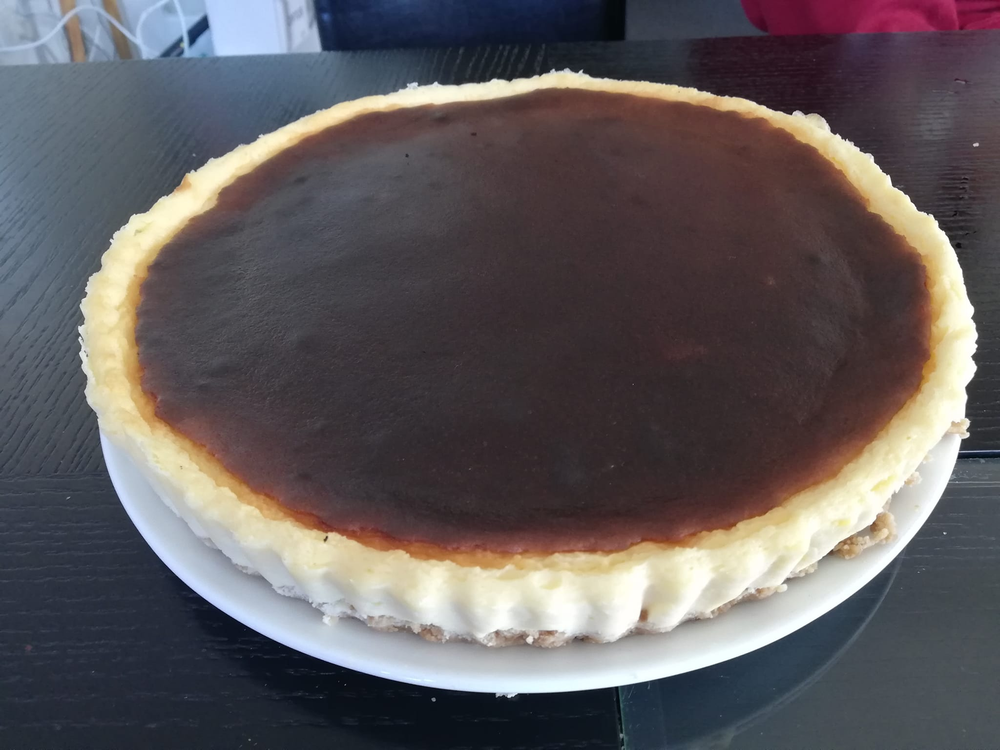

Cheesecakes!

Ingredients:
- A 18cm spring-form cake pan (I personally used a tart pan!)
- 120g biscuits
- 60g melted butter
- 400g creamcheese (Full fat)
- 120g granulated sugar
- 200g sour cream or 100g heavy cream + 100g yogurt
- 150ml heavy cream
- 2 eggs
- 2tbsp corn starch
- 1.5tbsp vanilla extract
- 1/4 lemon juice
Steps:
- Preheat the oven to 180ºC.
- Crunch the biscuits until it reaches a breadcrumb-like state.
- Pour the melted butter over the biscuit crumbs, mix well.
- Spread the mixture evenly, forming a base in the spring-form pan.
- Using a stick of butter, lightly grease the inner side of the pan, then line the inner side with baking paper.
- Line the outer side of the pan with aluminium foil.
- Put the creamcheese in a separate glass bowl.
- Mix the sugar, sour cream, heavy cream/yogurt, eggs, corn starch, vanilla extract and lemon juice into the creamcheese, whisking until smooth after adding an ingredient.
- Pour the creamcheese into the pan, wobble the pan slightly to spread the mixture evenly.
- Put the pan into the oven, pouring boiled water into the tray holding the pan.
- Bake the cake at 180ºC for 30 minutes.
- After the 30 minutes, leave the cake to cooldown for an hour in the oven.
- Refrigerate for 6 hours and serve.
Recipe taken from here